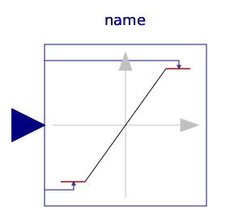
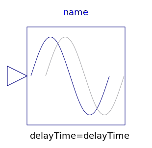
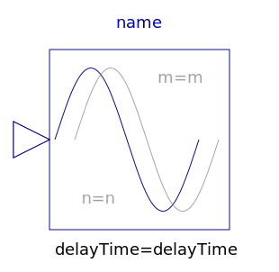

This package contains discontinuous and non-differentiable, algebraic input/output blocks.
| Name | Description |
|---|---|
| Limit the range of a signal | |
|  VariableLimiter | Limit the range of a signal with variable limits |
| Limits the slew rate of a signal | |
| Provide a region of zero output | |
|  FixedDelay | Delay block with fixed DelayTime |
|  PadeDelay | Pade approximation of delay block with fixed DelayTime |
| Delay block with variable DelayTime |